Реальные модули, изолированные данные, тёмная тема, ширина 320 px. Нажмите изображение для полного размера. WebKit на Windows не равен Safari. Галерея дополняет реестр параметров и не подтверждает все состояния каждого окна.
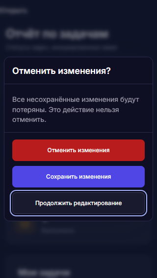

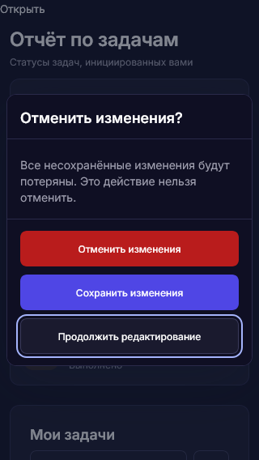
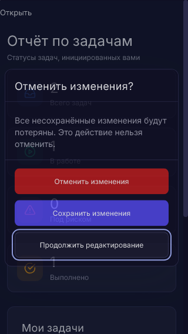

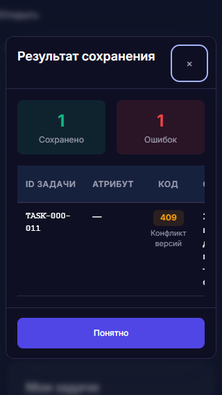
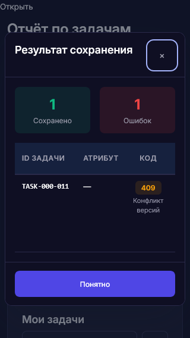
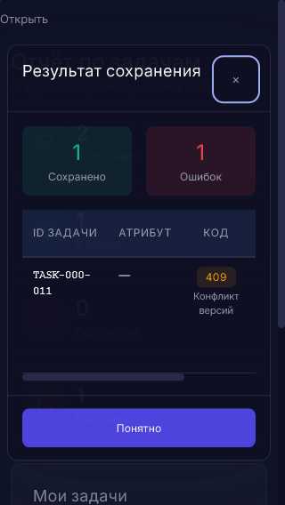
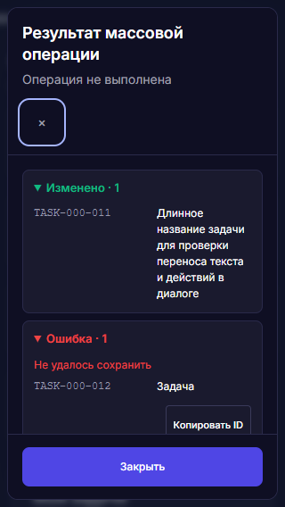

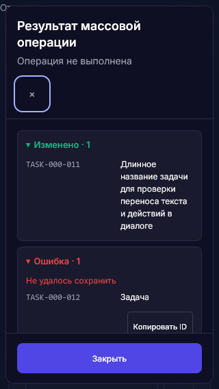
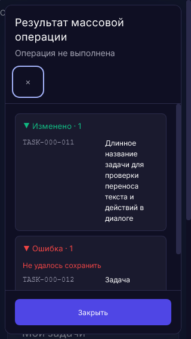

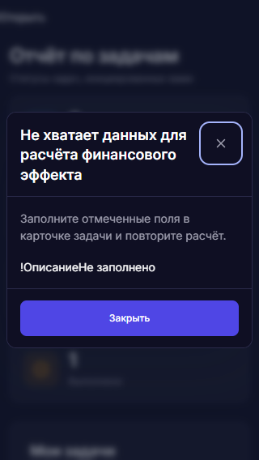
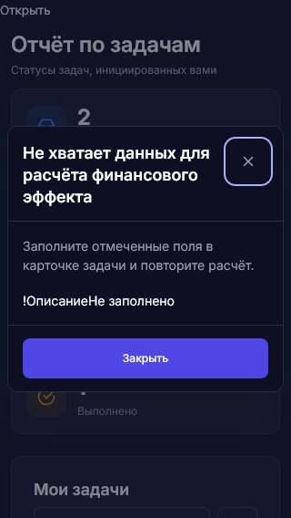
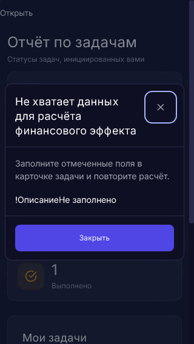
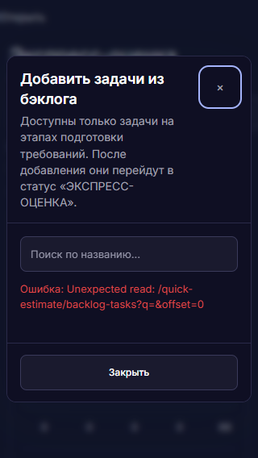

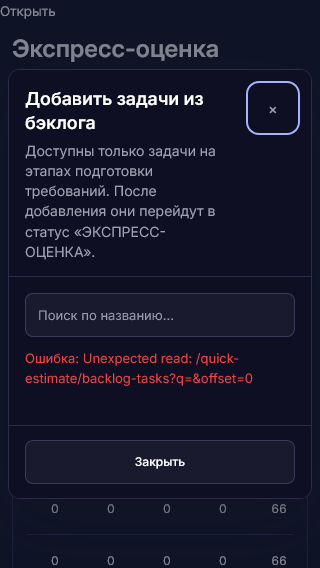
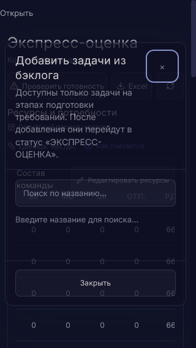

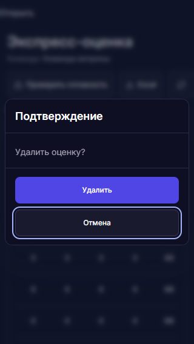
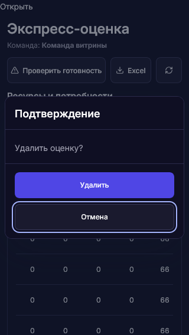
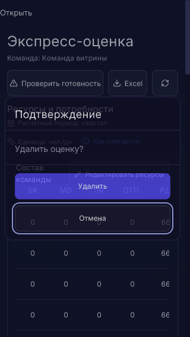

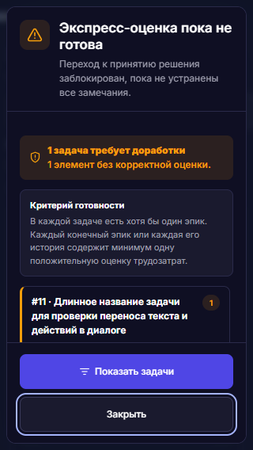
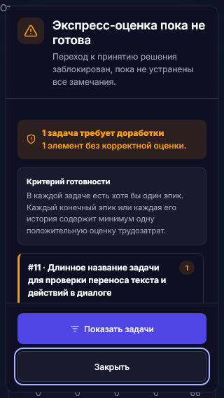
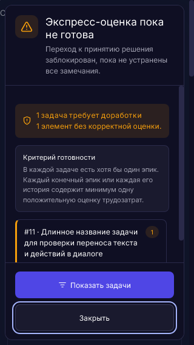

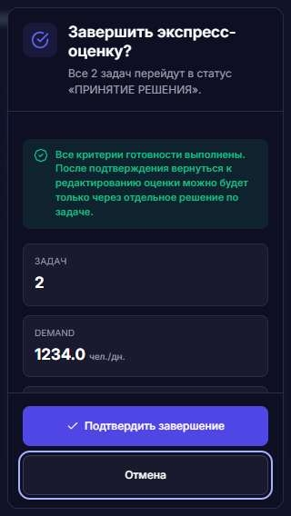
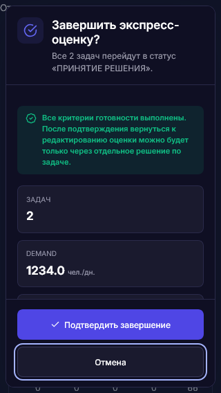
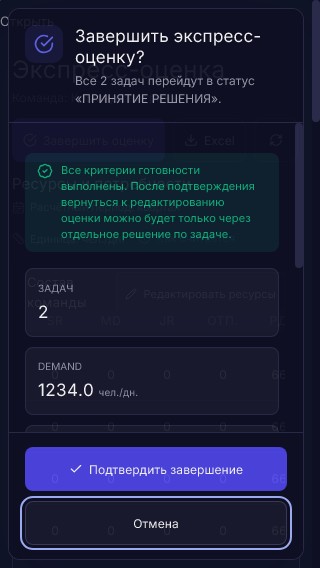
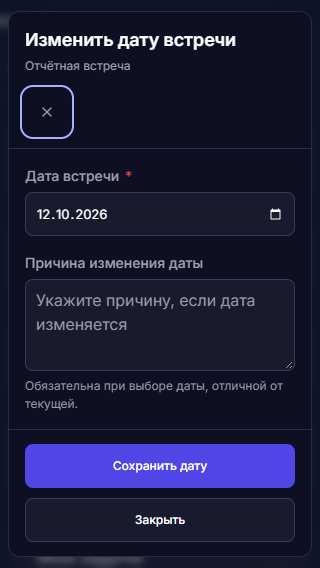
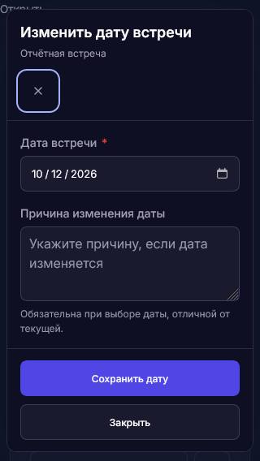
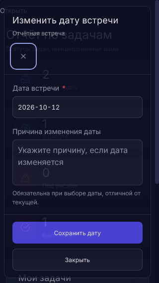

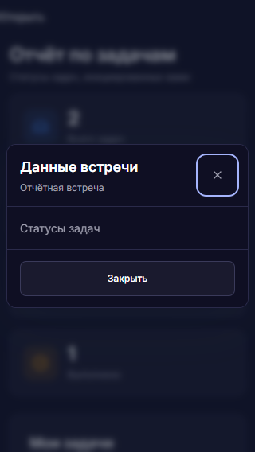
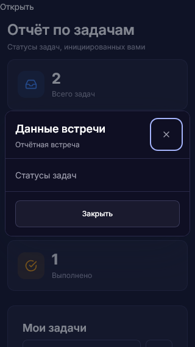
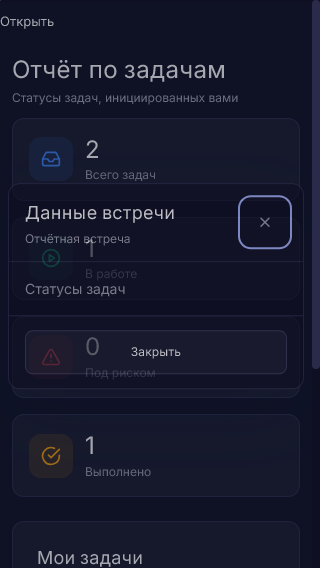
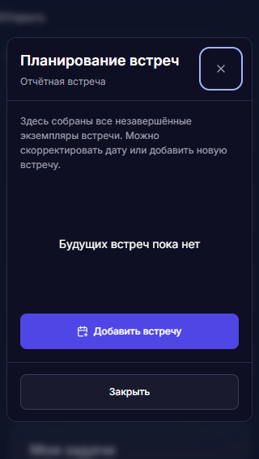

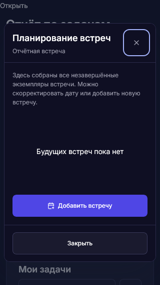
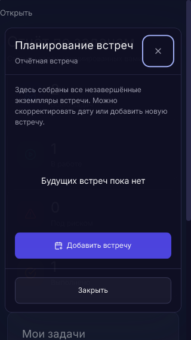

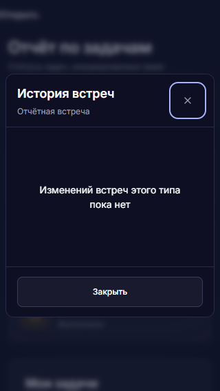
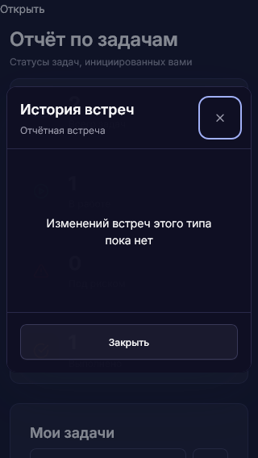
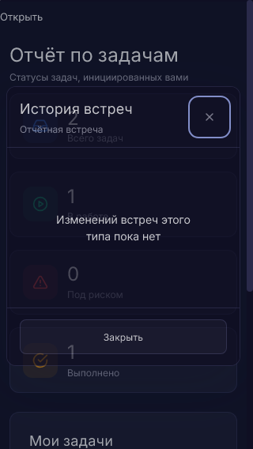